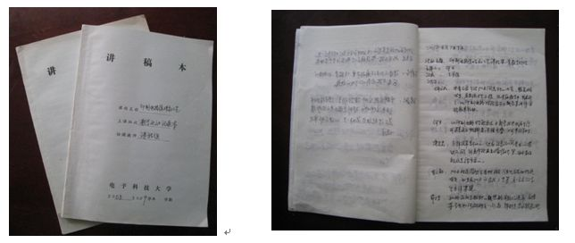

一、教学研究活动
长期以来，课程组十分重视“印制电路原理和工艺”课程建设及教学研究与改革，并形成了以专题小组结合团队集体交流等形式定期开展学习、观摩、研讨等活动的良好制度。"以改促进、以建求进，以质取进"是我们近年来教改思路。通过多年来的实践，课程组根据学校培养国家和社会所需电子信息产业急需印制电路设计与制造行业专业型、研究型人才的目标，有针对性的分别在教学过程和环节管理的各方面规范措施、教学改革项目研究、教学内容更新、教学方法与手段改革、教材建设的体系研讨、实验教学内容更新等方面开展了大量深入的教研活动和探索，取得了丰富的教改和教研成果。其中，部分成果在课程实践应用中已发挥出显著成效。
教学活动记录选登
二、教改成果与教学成果
1、课程内容与体系的改革与研究成果
(1）通过教研活动推动教学改革。每年都要举行多次教研活动、师生互动活动，研讨教学内容和教学方法，针对教师之间的讨论和学生的意见，对教学内容精细设计、完善，提高了课程的教学质量。2010年电子科技大学应用化学专业被评为“省级特色专业”，印制电路原理和工艺课程是其重要组成部份之一。
（2）将相关科研成果及时引入课程教学活动中，初步搭建起创新型人才培养平台。课程组创建的“三个链接”人才培养模式获得了四川省教学成果一等奖。由课程组指导的学生，把所学到的现代印制电路原理和工艺应用于科研和毕业论文，取得了很好的效果，有学生参与共公开发表的研究论文数十篇。
（3）课程组组织力量先后两次对课程使用的教材进行建设更新，出版了《现代印制电路原理与工艺》第一版（2006年）和第二版（2010年）。该教材为教育部“十一五”规划教材和印制电路行业行业协会技术人员培训教材,受到同行的高度评价。
（4）课程组鼓励教师积极进行教学研究，并制定了相应的奖励政策。近5年，课程组共公开发表重要教学研究论文16篇，事实证明，通过教学研究，使教师的教学思想和教学理念得到提升，有效的促进了教学质量提高。
2、教学方法和技巧的改革及教改成果根据“印制电路原理和工艺”这门课的特点和教学基本规律，通过本课程组多年不断探索和改革，主要运用了传统教学方法与现代教育技术相结合、课堂讲授重点与一般相结合、理论教学与实验教学相结合；校内实践教学与校外实习基地相结合、辅导答疑与课外活动相结合、理论考试与实践技能相结合等教学方法，提高了学生的独立思维能力、独立学习能力、分析问题和解决问题的能力，增强了学生的专业意识、创新意识，使毕业的学生在电子技术创新、新电子产品开发等相关领域具有较强的研发能力。教学改革成果主要体现在以下几个方面。
（1）课堂教学手段——多媒体教学与传统板书讲授相结合在课堂教学中，运用精心设计的教学多媒体讲稿，使课堂寓教于乐、抽象问题形象化，极大地培养和激发学生的学习兴趣，增强学生对知识点的理解和运用。多媒体课件的使用，节约了传统板书的时间，增加了课堂教学的信息量，使学习效率获得提高。在应用PPT同时适当地结合板书、在黑板上的演算等过程，减少了学生学习的枯燥感，使学生的思考与教师同步。
（2）现代教学手段——网上教学本课程还充分利用了现代化的教学手段，建有本课程专有网站。丰富的网上教学资源，为学生自学与复习提供了方便，也极大地增强了教师和学生、学生和学生之间的交互性、打破了教师和学生、学生和学生之间的相对孤立状态。这种交互性是近乎实时的，而且可以利用多种渠道实现，比如：电子邮件，BBS，网上在线交谈等；教学大纲介绍本课程的教学目的和要求；电子课件即课堂讲课的PowerPoint多媒体课件，并制作成了网页的形式，便于学生对课堂上未能理解和掌握的内容在课前预习和课后复习；电子教案（Word文档）则指出了课程中各章节内容的重点和难点，并对其进行讲解；通过网上习题，可使学生及时得到有关自己学习过程的反馈及有针对性的诊断，使得学生能够及时调整自己的学习；网络同多媒体技术、虚拟现实技术相结合，可实现虚拟图书馆、虚拟实验室、虚拟课堂等，为学生提供多层次、全方位的学习资源，可引导学生由被动式学习向主动式学习转变；网上提问与网上答疑可随时解答学生在学习中的问题；网上讨论是由学生和教师共同参与的自由论坛，学生间也可相互交流经验。
（3）辅助教学手段——实验教学与理论教学相结合在理论教学的基础上，我们还精心设计了相关的实验。通过这些实验，可以使学生全面掌握现代印制电路原理和工艺，加强学生对课堂教学内容的理解。
（4）科研成果转化为教学素材通过将本学科的前沿技术和所取得的科研成果引入到教学中，为教学提供了很好的素材，确保了课程教学的先进性。具体做法有以下三种途径：
① 本科教学实验室，科研实验室和校外实习综合互用方法
为提高学生综合素质和实验动手能力，将课程实验安排为三个部分，即与印制电路基本工艺流程掌握实验、课程设计实验和综合大型工艺实验，分别在本课专业实验室，科研实验室和校外实习基地开放，本课程专业实验室面积280m2，每周轮流做实验，科研实验室的课程设计安排2个，由各课题组负责实施，校外大型综合实验每学年在6月底安排一次，这样就变传统的见面讲述为走进实验现场学习。
② 毕业设计与应用课题兼容化的新思路
结合我们学校承担大量科研项目的特点，将80％以上的大四本科毕业生设计直接安排在课题组中与硕士生/博士生/老师一起进行研究，学生真正通过工程项目进行了训练，同时企业接收学生后不必半年的培训，直接可进入研究和管理。在整个毕业设计中，师生互动全面的发挥，许多师生通过互动和研究，取得新进展，发表出高质量学术论文，同时对科研过程，管理过程和协作工作过程有更深的了解。
③课题小组与科研课题小组合并一体的工作方法
根据课程小组人员过于分散，不利于开展研讨活动，也不利于利用科研实验室做实验等诸多不便，我们争取课程小组与科研小组合并的措施，集成课程小组与课题小组，由科研组长兼代课程组长，使教学队伍更有利于管理和交流。
3、开展校级交流、校企交流，极大提高学生的社会适应能力（1）课程组利用与相关高校的友好关系，积极开展校际间的交流，通过与重庆大学、四川师范大学和北京大学在教学教法方面的交流，对“印制电路原理和工艺”课程内容进行了系统的编导，并由机械工业出版社出版相关教材，扩大了“印制电路原理和工艺”课程的影响，提高了多个学校各相关专业的教学质量，使近1200名毕业生受益。
（2）每年邀请国内印制电路行业的杰出专家到学校给学生做行业发展动态、技术发展动态的专题报告。让学生通过专家的报告，充分的认识到我国2006年就超过日本和美国，成为世界印制电路行业的第一制造大国，总产值占到世界印制电路行业的三分之一，印制电路企业到达1500家，从业人数超过100万。但高端产品的关键技术被日本和欧美垄断。我国是印制电路大国，但不是强国，为了把我国的印制电路行业做大、做强，急需大量的印制电路高端人才，以此激发学生的学习热情。
（3）专家、企业家、学生之间的互动法教学产生极大的潜在效能，学生从印制电路原理和工艺的学习中获得了信息处理、信息存储、信息传输赖以提高的关键技术瓶颈所在，丰富了基础知识，使学生在灵活和敏捷性方面的素质极大提高。“训练-互动-制度三个链接” 创新人才培养体系的构建，培养了学生的创新意识、创新思维和创新能力。通过对学生施以系统的教育和影响，使他们善于发现、认识有意义的新知识、新事物、新思想和新方法，努力探索并掌握其中蕴藏的基本规律，逐步形成相应的能力，充分发挥学生的创新潜能，为其成为“创新型”人才奠定必备的素质基础。因而培养的学生深受国内用人单位的欢迎，应用化学学生连续三年的就业率为100％。
4、获得的校级以上教学研究表彰/奖励（1）电子科学与技术专业"三个链接"创新培养体系探索与实践, 四川省教学成果一等奖，2008, 张怀武、靳敏、于奇、何为等。
（2）《全国优秀教师》 国家教育部，2004年10月9日，张怀武。
（3）“印制电路原理和工艺”电子科技大学教学成果二等奖 2008年9月，张怀武、何为等。
（4）《电子自旋相关学》 电子科技大学教材二等奖，2004年9月，张怀武等。
（5）《电子材料与元器件系列课程改革》 四川省教学成果二等奖，2004年12月，李言荣，张怀武，张树人，李燕，姜斌
5.发表代表性的教改教研论文有：[1]薛卫东,何为,王守绪,陈兆霞,张敏,陈浪,何波,万永东.均匀设计法在等离子体去钻污工艺优化中的应用[J].实验科学与技术.2010，8(2):39-42
[2]何为,吴婧,夏建飞,张敏,王守绪,胡可,毛继美.优化试验设计在次亚磷酸钠化学镀铜工艺研究中的应用[J].实验科学与技术.2010,8(2):35-38
[3]何为,何波,袁正希,徐景浩,扬长生,张宣东.运用《优化试验设计》提高实践教学质量的研究与实践[J].中国教育导刊, 2007,(18）:34-36
[4]何为,唐先忠,王守绪,王磊.线性扫描伏安法与循环伏安法实验技术[J].实验科学与技术.2005,（增刊）:126-128.
[5]何为,唐先忠.应用化学专业本科人才培养方案的研究与实践[J].中国教育导报.2006,（9）：35-38
[6]何为,唐先忠,唐彬.《试验设计方法》课程实验教学内容的研究与实践[J].中国教育教学研究杂志.2006,(28):36-37
[7]李元勋,何为,唐先忠等.纳米二氧化锡制备与特性测试[J].实验科学与技术.2003,（2）：61－64
[8]王守绪,何为,唐先忠,张敏.利用化学实验构筑21世纪素质教育平台的探索[J].实验科学与技术.2005,（2）:51-53
[9]扬长生,何为,李元勋.电子类工科学校开设化学课程设计的探索与实践[J].中国教育导报.2006,（1）：54-55
[10]王守绪.加强化学实验教学,培养创新人才[M].中国化学会全国第六届大学化学教学研讨会论文选集.2000年7月（中国西安），西北大学出版社：143-144
[11]李元勋,唐先忠,扬长生,何为.《精细化工》课程设计的探索与实践研究[J].中国教育导刊.2006,(11）:87-88
[12]胡文成,陈文瑾,唐先忠,何为.涉及多知识点的物理化学综合实验-化学镀铜实验[J].中国科学教育.2007,(13):32-34
[13]何为,李浪涛,何波,乔三龙.用正交试验法优化挠性多层板层压工艺参数[J].印制电路信息,2005 ,(6):53-54
[14]王守绪,何为.无机化学实验教学改革[J].广西师范大学学报.2003,（增刊）：22－24
[15]胡文成,董东,侯高垒,沈怡东,何为.溶胶-凝胶法制备BST铁电薄膜的实验教学[J].实验科学与技术.2007, 5(6)：125-130
[16]王守绪,何为,唐先忠，张敏等.开设跨专业化学实验课程的体会[J].实验科学与技术.2005,（增刊）:82-83